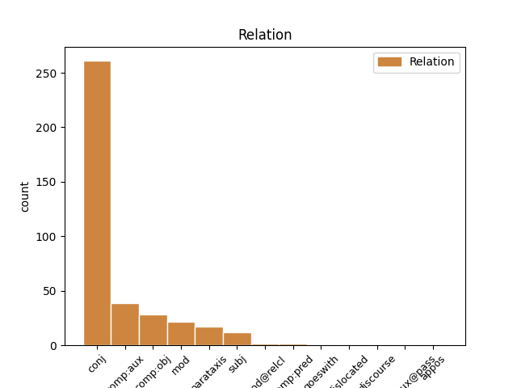
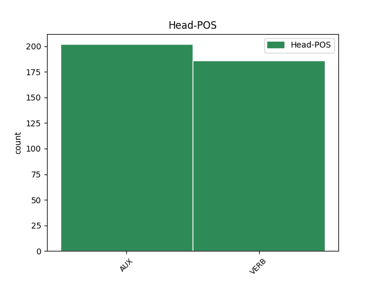
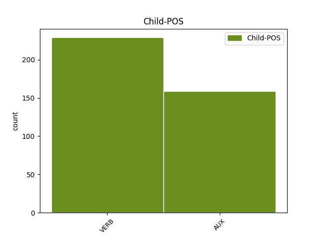

Distribution of features within this leaf



Agreement Rules sorted by frequency.
- When the dependent token is the conjunct(conj) of the head token, and the dependent token is VERB.
1 No _ _ _ _ 0 _ _ _
2 written _ _ _ _ 0 _ _ _
3 contemporary _ _ _ _ 0 _ _ _
4 description _ _ _ _ 0 _ _ _
5 of _ _ _ _ 0 _ _ _
6 Shakespeare _ _ _ _ 0 _ _ _
7 's _ _ _ _ 0 _ _ _
8 physical _ _ _ _ 0 _ _ _
9 appearance _ _ _ _ 0 _ _ _
10 survives survive VERB V Mood=Ind|Number=Sing|Person=3|Tense=Pres|VerbForm=Fin 0 _ _ _
11 , _ _ _ _ 0 _ _ _
12 and _ _ _ _ 0 _ _ _
13 no _ _ _ _ 0 _ _ _
14 evidence _ _ _ _ 0 _ _ _
15 suggests suggest VERB V Mood=Ind|Number=Sing|Person=3|Tense=Pres|VerbForm=Fin 10 conj _ _
16 that _ _ _ _ 0 _ _ _
17 he _ _ _ _ 0 _ _ _
18 ever _ _ _ _ 0 _ _ _
19 commissioned _ _ _ _ 0 _ _ _
20 a _ _ _ _ 0 _ _ _
21 portrait _ _ _ _ 0 _ _ _
22 , _ _ _ _ 0 _ _ _
23 so _ _ _ _ 0 _ _ _
24 the _ _ _ _ 0 _ _ _
25 Droeshout _ _ _ _ 0 _ _ _
26 engraving _ _ _ _ 0 _ _ _
27 , _ _ _ _ 0 _ _ _
28 which _ _ _ _ 0 _ _ _
29 Ben _ _ _ _ 0 _ _ _
30 Jonson _ _ _ _ 0 _ _ _
31 approved _ _ _ _ 0 _ _ _
32 of _ _ _ _ 0 _ _ _
33 as _ _ _ _ 0 _ _ _
34 a _ _ _ _ 0 _ _ _
35 good _ _ _ _ 0 _ _ _
36 likeness _ _ _ _ 0 _ _ _
37 , _ _ _ _ 0 _ _ _
38 and _ _ _ _ 0 _ _ _
39 his _ _ _ _ 0 _ _ _
40 Stratford _ _ _ _ 0 _ _ _
41 monument _ _ _ _ 0 _ _ _
42 provide _ _ _ _ 0 _ _ _
43 the _ _ _ _ 0 _ _ _
44 best _ _ _ _ 0 _ _ _
45 evidence _ _ _ _ 0 _ _ _
46 of _ _ _ _ 0 _ _ _
47 his _ _ _ _ 0 _ _ _
48 appearance _ _ _ _ 0 _ _ _
49 . _ _ _ _ 0 _ _ _
1 Scholars _ _ _ _ 0 _ _ _
2 find find VERB V Mood=Ind|Number=Plur|Tense=Pres|VerbForm=Fin 0 _ _ _
3 evidence _ _ _ _ 0 _ _ _
4 both _ _ _ _ 0 _ _ _
5 for _ _ _ _ 0 _ _ _
6 and _ _ _ _ 0 _ _ _
7 against _ _ _ _ 0 _ _ _
8 Shakespeare _ _ _ _ 0 _ _ _
9 's _ _ _ _ 0 _ _ _
10 Catholicism _ _ _ _ 0 _ _ _
11 in _ _ _ _ 0 _ _ _
12 his _ _ _ _ 0 _ _ _
13 plays _ _ _ _ 0 _ _ _
14 , _ _ _ _ 0 _ _ _
15 but _ _ _ _ 0 _ _ _
16 the _ _ _ _ 0 _ _ _
17 truth _ _ _ _ 0 _ _ _
18 may may AUX VM Mood=Ind|Person=3|Tense=Pres|VerbForm=Fin 2 conj _ _
19 be _ _ _ _ 0 _ _ _
20 impossible _ _ _ _ 0 _ _ _
21 to _ _ _ _ 0 _ _ _
22 prove _ _ _ _ 0 _ _ _
23 either _ _ _ _ 0 _ _ _
24 way _ _ _ _ 0 _ _ _
25 . _ _ _ _ 0 _ _ _
1 Shakespeare _ _ _ _ 0 _ _ _
2 's _ _ _ _ 0 _ _ _
3 next _ _ _ _ 0 _ _ _
4 comedy _ _ _ _ 0 _ _ _
5 , _ _ _ _ 0 _ _ _
6 the _ _ _ _ 0 _ _ _
7 equally _ _ _ _ 0 _ _ _
8 romantic _ _ _ _ 0 _ _ _
9 Merchant _ _ _ _ 0 _ _ _
10 of _ _ _ _ 0 _ _ _
11 Venice _ _ _ _ 0 _ _ _
12 , _ _ _ _ 0 _ _ _
13 contains _ _ _ _ 0 _ _ _
14 a _ _ _ _ 0 _ _ _
15 portrayal _ _ _ _ 0 _ _ _
16 of _ _ _ _ 0 _ _ _
17 the _ _ _ _ 0 _ _ _
18 vengeful _ _ _ _ 0 _ _ _
19 Jewish _ _ _ _ 0 _ _ _
20 moneylender _ _ _ _ 0 _ _ _
21 Shylock _ _ _ _ 0 _ _ _
22 , _ _ _ _ 0 _ _ _
23 which _ _ _ _ 0 _ _ _
24 reflects _ _ _ _ 0 _ _ _
25 Elizabethan _ _ _ _ 0 _ _ _
26 views _ _ _ _ 0 _ _ _
27 but _ _ _ _ 0 _ _ _
28 may may AUX VM Mood=Ind|Person=3|Tense=Pres|VerbForm=Fin 0 _ _ _
29 appear appear VERB V Mood=Ind|Number=Plur|Tense=Pres|VerbForm=Fin 28 comp:aux _ _
30 derogatory _ _ _ _ 0 _ _ _
31 to _ _ _ _ 0 _ _ _
32 modern _ _ _ _ 0 _ _ _
33 audiences _ _ _ _ 0 _ _ _
34 . _ _ _ _ 0 _ _ _
1 " _ _ _ _ 0 _ _ _
2 That _ _ _ _ 0 _ _ _
3 King _ _ _ _ 0 _ _ _
4 Shakespeare _ _ _ _ 0 _ _ _
5 " _ _ _ _ 0 _ _ _
6 , _ _ _ _ 0 _ _ _
7 the _ _ _ _ 0 _ _ _
8 essayist _ _ _ _ 0 _ _ _
9 Thomas _ _ _ _ 0 _ _ _
10 Carlyle _ _ _ _ 0 _ _ _
11 wrote write VERB V Mood=Ind|Person=3|Tense=Past|VerbForm=Fin 16 parataxis _ _
12 in _ _ _ _ 0 _ _ _
13 1840 _ _ _ _ 0 _ _ _
14 , _ _ _ _ 0 _ _ _
15 " _ _ _ _ 0 _ _ _
16 does do AUX VM Mood=Ind|Number=Sing|Person=3|Tense=Pres|VerbForm=Fin 0 _ _ _
17 not _ _ _ _ 0 _ _ _
18 he _ _ _ _ 0 _ _ _
19 shine _ _ _ _ 0 _ _ _
20 , _ _ _ _ 0 _ _ _
21 in _ _ _ _ 0 _ _ _
22 crowned _ _ _ _ 0 _ _ _
23 sovereignty _ _ _ _ 0 _ _ _
24 , _ _ _ _ 0 _ _ _
25 over _ _ _ _ 0 _ _ _
26 us _ _ _ _ 0 _ _ _
27 all _ _ _ _ 0 _ _ _
28 , _ _ _ _ 0 _ _ _
29 as _ _ _ _ 0 _ _ _
30 the _ _ _ _ 0 _ _ _
31 noblest _ _ _ _ 0 _ _ _
32 , _ _ _ _ 0 _ _ _
33 gentlest _ _ _ _ 0 _ _ _
34 , _ _ _ _ 0 _ _ _
35 yet _ _ _ _ 0 _ _ _
36 strongest _ _ _ _ 0 _ _ _
37 of _ _ _ _ 0 _ _ _
38 rallying _ _ _ _ 0 _ _ _
39 signs _ _ _ _ 0 _ _ _
40 ; _ _ _ _ 0 _ _ _
1 ... _ _ _ _ 0 _ _ _
2 there _ _ _ _ 0 _ _ _
3 is _ _ _ _ 0 _ _ _
4 an _ _ _ _ 0 _ _ _
5 upstart _ _ _ _ 0 _ _ _
6 Crow _ _ _ _ 0 _ _ _
7 , _ _ _ _ 0 _ _ _
8 beautified _ _ _ _ 0 _ _ _
9 with _ _ _ _ 0 _ _ _
10 our _ _ _ _ 0 _ _ _
11 feathers _ _ _ _ 0 _ _ _
12 , _ _ _ _ 0 _ _ _
13 that _ _ _ _ 0 _ _ _
14 with _ _ _ _ 0 _ _ _
15 his _ _ _ _ 0 _ _ _
16 Tiger _ _ _ _ 0 _ _ _
17 's _ _ _ _ 0 _ _ _
18 heart _ _ _ _ 0 _ _ _
19 wrapped _ _ _ _ 0 _ _ _
20 in _ _ _ _ 0 _ _ _
21 a _ _ _ _ 0 _ _ _
22 Player _ _ _ _ 0 _ _ _
23 's _ _ _ _ 0 _ _ _
24 hide _ _ _ _ 0 _ _ _
25 , _ _ _ _ 0 _ _ _
26 supposes suppose VERB V Mood=Ind|Number=Sing|Person=3|Tense=Pres|VerbForm=Fin 0 _ _ _
27 he _ _ _ _ 0 _ _ _
28 is be AUX V Mood=Ind|Number=Sing|Person=3|Tense=Pres|VerbForm=Fin 26 comp:obj _ _
29 as _ _ _ _ 0 _ _ _
30 well _ _ _ _ 0 _ _ _
31 able _ _ _ _ 0 _ _ _
32 to _ _ _ _ 0 _ _ _
33 bombast _ _ _ _ 0 _ _ _
34 out _ _ _ _ 0 _ _ _
35 a _ _ _ _ 0 _ _ _
36 blank _ _ _ _ 0 _ _ _
37 verse _ _ _ _ 0 _ _ _
38 as _ _ _ _ 0 _ _ _
39 the _ _ _ _ 0 _ _ _
40 best _ _ _ _ 0 _ _ _
41 of _ _ _ _ 0 _ _ _
42 you _ _ _ _ 0 _ _ _
43 : _ _ _ _ 0 _ _ _
1 Two _ _ _ _ 0 _ _ _
2 plays _ _ _ _ 0 _ _ _
3 not _ _ _ _ 0 _ _ _
4 included _ _ _ _ 0 _ _ _
5 in _ _ _ _ 0 _ _ _
6 the _ _ _ _ 0 _ _ _
7 First _ _ _ _ 0 _ _ _
8 Folio _ _ _ _ 0 _ _ _
9 , _ _ _ _ 0 _ _ _
10 The _ _ _ _ 0 _ _ _
11 Two _ _ _ _ 0 _ _ _
12 Noble _ _ _ _ 0 _ _ _
13 Kinsmen _ _ _ _ 0 _ _ _
14 and _ _ _ _ 0 _ _ _
15 Pericles _ _ _ _ 0 _ _ _
16 , _ _ _ _ 0 _ _ _
17 Prince _ _ _ _ 0 _ _ _
18 of _ _ _ _ 0 _ _ _
19 Tyre _ _ _ _ 0 _ _ _
20 , _ _ _ _ 0 _ _ _
21 are be AUX VA Mood=Ind|Number=Plur|Tense=Pres|VerbForm=Fin 0 _ _ _
22 now _ _ _ _ 0 _ _ _
23 accepted _ _ _ _ 0 _ _ _
24 as _ _ _ _ 0 _ _ _
25 part _ _ _ _ 0 _ _ _
26 of _ _ _ _ 0 _ _ _
27 the _ _ _ _ 0 _ _ _
28 canon _ _ _ _ 0 _ _ _
29 , _ _ _ _ 0 _ _ _
30 with _ _ _ _ 0 _ _ _
31 scholars _ _ _ _ 0 _ _ _
32 agreed agree VERB V Mood=Ind|Person=3|Tense=Past|VerbForm=Fin 21 mod _ _
33 that _ _ _ _ 0 _ _ _
34 Shakespeare _ _ _ _ 0 _ _ _
35 made _ _ _ _ 0 _ _ _
36 a _ _ _ _ 0 _ _ _
37 major _ _ _ _ 0 _ _ _
38 contribution _ _ _ _ 0 _ _ _
39 to _ _ _ _ 0 _ _ _
40 their _ _ _ _ 0 _ _ _
41 composition _ _ _ _ 0 _ _ _
42 . _ _ _ _ 0 _ _ _
1 The _ _ _ _ 0 _ _ _
2 London _ _ _ _ 0 _ _ _
3 public _ _ _ _ 0 _ _ _
4 playhouses _ _ _ _ 0 _ _ _
5 were _ _ _ _ 0 _ _ _
6 repeatedly _ _ _ _ 0 _ _ _
7 closed _ _ _ _ 0 _ _ _
8 during _ _ _ _ 0 _ _ _
9 extended _ _ _ _ 0 _ _ _
10 outbreaks _ _ _ _ 0 _ _ _
11 of _ _ _ _ 0 _ _ _
12 the _ _ _ _ 0 _ _ _
13 plague _ _ _ _ 0 _ _ _
14 ( _ _ _ _ 0 _ _ _
15 a _ _ _ _ 0 _ _ _
16 total _ _ _ _ 0 _ _ _
17 of _ _ _ _ 0 _ _ _
18 over _ _ _ _ 0 _ _ _
19 60 _ _ _ _ 0 _ _ _
20 months _ _ _ _ 0 _ _ _
21 closure _ _ _ _ 0 _ _ _
22 between _ _ _ _ 0 _ _ _
23 May _ _ _ _ 0 _ _ _
24 1603 _ _ _ _ 0 _ _ _
25 and _ _ _ _ 0 _ _ _
26 February _ _ _ _ 0 _ _ _
27 1610 _ _ _ _ 0 _ _ _
28 ) _ _ _ _ 0 _ _ _
29 , _ _ _ _ 0 _ _ _
30 which _ _ _ _ 0 _ _ _
31 meant mean VERB V Mood=Ind|Person=3|Tense=Past|VerbForm=Fin 0 _ _ _
32 there _ _ _ _ 0 _ _ _
33 was be VERB V Mood=Ind|Number=Sing|Person=3|Tense=Past|VerbForm=Fin 31 comp:obj _ _
34 often _ _ _ _ 0 _ _ _
35 no _ _ _ _ 0 _ _ _
36 acting _ _ _ _ 0 _ _ _
37 work _ _ _ _ 0 _ _ _
38 . _ _ _ _ 0 _ _ _
1 The _ _ _ _ 0 _ _ _
2 Ukrainian _ _ _ _ 0 _ _ _
3 crisis _ _ _ _ 0 _ _ _
4 may _ _ _ _ 0 _ _ _
5 prove _ _ _ _ 0 _ _ _
6 helpful _ _ _ _ 0 _ _ _
7 , _ _ _ _ 0 _ _ _
8 though _ _ _ _ 0 _ _ _
9 that _ _ _ _ 0 _ _ _
10 appears appear VERB V Mood=Ind|Number=Sing|Person=3|Tense=Pres|VerbForm=Fin 0 _ _ _
11 less _ _ _ _ 0 _ _ _
12 likely _ _ _ _ 0 _ _ _
13 now _ _ _ _ 0 _ _ _
14 – _ _ _ _ 0 _ _ _
15 which _ _ _ _ 0 _ _ _
16 may may AUX VM Mood=Ind|Person=3|Tense=Pres|VerbForm=Fin 10 mod _ _
17 be _ _ _ _ 0 _ _ _
18 a _ _ _ _ 0 _ _ _
19 good _ _ _ _ 0 _ _ _
20 thing _ _ _ _ 0 _ _ _
21 to _ _ _ _ 0 _ _ _
22 the _ _ _ _ 0 _ _ _
23 extent _ _ _ _ 0 _ _ _
24 that _ _ _ _ 0 _ _ _
25 one _ _ _ _ 0 _ _ _
26 unintended _ _ _ _ 0 _ _ _
27 consequence _ _ _ _ 0 _ _ _
28 could _ _ _ _ 0 _ _ _
29 be _ _ _ _ 0 _ _ _
30 a _ _ _ _ 0 _ _ _
31 loan _ _ _ _ 0 _ _ _
32 to _ _ _ _ 0 _ _ _
33 Ukraine _ _ _ _ 0 _ _ _
34 that _ _ _ _ 0 _ _ _
35 is _ _ _ _ 0 _ _ _
36 larger _ _ _ _ 0 _ _ _
37 than _ _ _ _ 0 _ _ _
38 it _ _ _ _ 0 _ _ _
39 really _ _ _ _ 0 _ _ _
40 needs _ _ _ _ 0 _ _ _
41 . _ _ _ _ 0 _ _ _
1 That _ _ _ _ 0 _ _ _
2 is be AUX V Mood=Ind|Number=Sing|Person=3|Tense=Pres|VerbForm=Fin 0 _ _ _
3 why _ _ _ _ 0 _ _ _
4 leaders _ _ _ _ 0 _ _ _
5 and _ _ _ _ 0 _ _ _
6 policymakers _ _ _ _ 0 _ _ _
7 from _ _ _ _ 0 _ _ _
8 across _ _ _ _ 0 _ _ _
9 the _ _ _ _ 0 _ _ _
10 continent _ _ _ _ 0 _ _ _
11 have have AUX VA Mood=Ind|Number=Plur|Tense=Pres|VerbForm=Fin 2 subj _ _
12 declared _ _ _ _ 0 _ _ _
13 2014 _ _ _ _ 0 _ _ _
14 Africa _ _ _ _ 0 _ _ _
15 's _ _ _ _ 0 _ _ _
16 Year _ _ _ _ 0 _ _ _
17 of _ _ _ _ 0 _ _ _
18 Agriculture _ _ _ _ 0 _ _ _
19 and _ _ _ _ 0 _ _ _
20 Food _ _ _ _ 0 _ _ _
21 Security _ _ _ _ 0 _ _ _
22 . _ _ _ _ 0 _ _ _
1 It _ _ _ _ 0 _ _ _
2 is be AUX V Mood=Ind|Number=Sing|Person=3|Tense=Pres|VerbForm=Fin 0 _ _ _
3 not _ _ _ _ 0 _ _ _
4 clear _ _ _ _ 0 _ _ _
5 for _ _ _ _ 0 _ _ _
6 which _ _ _ _ 0 _ _ _
7 companies _ _ _ _ 0 _ _ _
8 Shakespeare _ _ _ _ 0 _ _ _
9 wrote write VERB V Mood=Ind|Person=3|Tense=Past|VerbForm=Fin 2 subj _ _
10 his _ _ _ _ 0 _ _ _
11 early _ _ _ _ 0 _ _ _
12 plays _ _ _ _ 0 _ _ _
13 . _ _ _ _ 0 _ _ _
1 After _ _ _ _ 0 _ _ _
2 all _ _ _ _ 0 _ _ _
3 , _ _ _ _ 0 _ _ _
4 the _ _ _ _ 0 _ _ _
5 volume _ _ _ _ 0 _ _ _
6 of _ _ _ _ 0 _ _ _
7 production _ _ _ _ 0 _ _ _
8 could can AUX VM Mood=Ind|Person=3|Tense=Past|VerbForm=Fin 0 _ _ _
9 not _ _ _ _ 0 _ _ _
10 possibly _ _ _ _ 0 _ _ _
11 expand _ _ _ _ 0 _ _ _
12 enough _ _ _ _ 0 _ _ _
13 to _ _ _ _ 0 _ _ _
14 reemploy _ _ _ _ 0 _ _ _
15 everyone _ _ _ _ 0 _ _ _
16 who _ _ _ _ 0 _ _ _
17 lost _ _ _ _ 0 _ _ _
18 their _ _ _ _ 0 _ _ _
19 job _ _ _ _ 0 _ _ _
20 as _ _ _ _ 0 _ _ _
21 a _ _ _ _ 0 _ _ _
22 handloom _ _ _ _ 0 _ _ _
23 weaver _ _ _ _ 0 _ _ _
24 as _ _ _ _ 0 _ _ _
25 a _ _ _ _ 0 _ _ _
26 machine _ _ _ _ 0 _ _ _
27 - _ _ _ _ 0 _ _ _
28 minder _ _ _ _ 0 _ _ _
29 or _ _ _ _ 0 _ _ _
30 a _ _ _ _ 0 _ _ _
31 carpet _ _ _ _ 0 _ _ _
32 - _ _ _ _ 0 _ _ _
33 seller _ _ _ _ 0 _ _ _
34 , _ _ _ _ 0 _ _ _
35 could can AUX VM Mood=Ind|Person=3|Tense=Past|VerbForm=Fin 8 parataxis _ _
36 it _ _ _ _ 0 _ _ _
37 ? _ _ _ _ 0 _ _ _
1 In _ _ _ _ 0 _ _ _
2 this _ _ _ _ 0 _ _ _
3 period _ _ _ _ 0 _ _ _
4 , _ _ _ _ 0 _ _ _
5 when _ _ _ _ 0 _ _ _
6 resources _ _ _ _ 0 _ _ _
7 flowed _ _ _ _ 0 _ _ _
8 to _ _ _ _ 0 _ _ _
9 this _ _ _ _ 0 _ _ _
10 " _ _ _ _ 0 _ _ _
11 innovative _ _ _ _ 0 _ _ _
12 " _ _ _ _ 0 _ _ _
13 sector _ _ _ _ 0 _ _ _
14 , _ _ _ _ 0 _ _ _
15 GDP _ _ _ _ 0 _ _ _
16 growth _ _ _ _ 0 _ _ _
17 was be AUX V Mood=Ind|Number=Sing|Person=3|Tense=Past|VerbForm=Fin 0 _ _ _
18 markedly _ _ _ _ 0 _ _ _
19 lower lower VERB V Mood=Ind|Number=Plur|Tense=Pres|VerbForm=Fin 17 comp:pred _ _
20 than _ _ _ _ 0 _ _ _
21 it _ _ _ _ 0 _ _ _
22 was _ _ _ _ 0 _ _ _
23 before _ _ _ _ 0 _ _ _
24 . _ _ _ _ 0 _ _ _
1 Or _ _ _ _ 0 _ _ _
2 ships ship VERB V Mood=Ind|Number=Sing|Person=3|Tense=Pres|VerbForm=Fin 0 _ _ _
3 from _ _ _ _ 0 _ _ _
4 Eastern _ _ _ _ 0 _ _ _
5 Europe _ _ _ _ 0 _ _ _
6 which _ _ _ _ 0 _ _ _
7 moor moor VERB V Mood=Ind|Number=Plur|Tense=Pres|VerbForm=Fin 2 mod@relcl _ _
8 adjacent _ _ _ _ 0 _ _ _
9 to _ _ _ _ 0 _ _ _
10 ships _ _ _ _ 0 _ _ _
11 over _ _ _ _ 0 _ _ _
12 here _ _ _ _ 0 _ _ _
13 , _ _ _ _ 0 _ _ _
14 with _ _ _ _ 0 _ _ _
15 all _ _ _ _ 0 _ _ _
16 the _ _ _ _ 0 _ _ _
17 obvious _ _ _ _ 0 _ _ _
18 risks _ _ _ _ 0 _ _ _
19 that _ _ _ _ 0 _ _ _
20 this _ _ _ _ 0 _ _ _
21 entails _ _ _ _ 0 _ _ _
22 . _ _ _ _ 0 _ _ _
1 Should _ _ _ _ 0 _ _ _
2 the _ _ _ _ 0 _ _ _
3 European _ _ _ _ 0 _ _ _
4 Union _ _ _ _ 0 _ _ _
5 fail _ _ _ _ 0 _ _ _
6 to _ _ _ _ 0 _ _ _
7 take _ _ _ _ 0 _ _ _
8 action _ _ _ _ 0 _ _ _
9 , _ _ _ _ 0 _ _ _
10 then _ _ _ _ 0 _ _ _
11 Member _ _ _ _ 0 _ _ _
12 States _ _ _ _ 0 _ _ _
13 would _ _ _ _ 0 _ _ _
14 be _ _ _ _ 0 _ _ _
15 obliged _ _ _ _ 0 _ _ _
16 to _ _ _ _ 0 _ _ _
17 amend _ _ _ _ 0 _ _ _
18 their _ _ _ _ 0 _ _ _
19 national _ _ _ _ 0 _ _ _
20 legislation _ _ _ _ 0 _ _ _
21 for _ _ _ _ 0 _ _ _
22 a _ _ _ _ 0 _ _ _
23 very _ _ _ _ 0 _ _ _
24 brief _ _ _ _ 0 _ _ _
25 period _ _ _ _ 0 _ _ _
26 , _ _ _ _ 0 _ _ _
27 until _ _ _ _ 0 _ _ _
28 the _ _ _ _ 0 _ _ _
29 CEN _ _ _ _ 0 _ _ _
30 completes complete VERB V Mood=Ind|Number=Sing|Person=3|Tense=Pres|VerbForm=Fin 0 _ _ _
31 its _ _ _ _ 0 _ _ _
32 work _ _ _ _ 0 _ _ _
33 , _ _ _ _ 0 _ _ _
34 which _ _ _ _ 0 _ _ _
35 would will AUX VM Mood=Ind|Person=3|Tense=Past|VerbForm=Fin 30 mod@relcl _ _
36 cause _ _ _ _ 0 _ _ _
37 unnecessary _ _ _ _ 0 _ _ _
38 cost _ _ _ _ 0 _ _ _
39 and _ _ _ _ 0 _ _ _
40 uncertainty _ _ _ _ 0 _ _ _
41 . _ _ _ _ 0 _ _ _
1 And _ _ _ _ 0 _ _ _
2 it _ _ _ _ 0 _ _ _
3 can can AUX VM Mood=Ind|Person=3|Tense=Pres|VerbForm=Fin 0 _ _ _
4 be _ _ _ _ 0 _ _ _
5 a _ _ _ _ 0 _ _ _
6 very _ _ _ _ 0 _ _ _
7 complicated _ _ _ _ 0 _ _ _
8 thing _ _ _ _ 0 _ _ _
9 , _ _ _ _ 0 _ _ _
10 what _ _ _ _ 0 _ _ _
11 human _ _ _ _ 0 _ _ _
12 health _ _ _ _ 0 _ _ _
13 is be AUX V Mood=Ind|Number=Sing|Person=3|Tense=Pres|VerbForm=Fin 3 dislocated _ SpaceAfter=No
14 . _ _ _ _ 0 _ _ _
1 This _ _ _ _ 0 _ _ _
2 is be AUX V Mood=Ind|Number=Sing|Person=3|Tense=Pres|VerbForm=Fin 0 _ _ _
3 whale _ _ _ _ 0 _ _ _
4 meat _ _ _ _ 0 _ _ _
5 that _ _ _ _ 0 _ _ _
6 I _ _ _ _ 0 _ _ _
7 photographed _ _ _ _ 0 _ _ _
8 in _ _ _ _ 0 _ _ _
9 a _ _ _ _ 0 _ _ _
10 grocery _ _ _ _ 0 _ _ _
11 store _ _ _ _ 0 _ _ _
12 in _ _ _ _ 0 _ _ _
13 Tokyo _ _ _ _ 0 _ _ _
14 - _ _ _ _ 0 _ _ _
15 or _ _ _ _ 0 _ _ _
16 is be VERB V Mood=Ind|Number=Sing|Person=3|Tense=Pres|VerbForm=Fin 2 discourse _ _
17 it _ _ _ _ 0 _ _ _
18 ? _ _ _ _ 0 _ _ _
1 In _ _ _ _ 0 _ _ _
2 1819 _ _ _ _ 0 _ _ _
3 Passez _ _ _ _ 0 _ _ _
4 offered _ _ _ _ 0 _ _ _
5 to _ _ _ _ 0 _ _ _
6 make _ _ _ _ 0 _ _ _
7 Balzac _ _ _ _ 0 _ _ _
8 his _ _ _ _ 0 _ _ _
9 successor _ _ _ _ 0 _ _ _
10 , _ _ _ _ 0 _ _ _
11 but _ _ _ _ 0 _ _ _
12 his _ _ _ _ 0 _ _ _
13 apprentice _ _ _ _ 0 _ _ _
14 h have VERB V Mood=Ind|Person=3|Tense=Past|VerbForm=Fin 0 _ _ _
15 ad have VERB V Mood=Ind|Person=3|Tense=Past|VerbForm=Fin 14 goeswith _ _
16 enough _ _ _ _ 0 _ _ _
17 of _ _ _ _ 0 _ _ _
18 the _ _ _ _ 0 _ _ _
19 law _ _ _ _ 0 _ _ _
20 . _ _ _ _ 0 _ _ _
1 Soon _ _ _ _ 0 _ _ _
2 afterwards _ _ _ _ 0 _ _ _
3 , _ _ _ _ 0 _ _ _
4 around _ _ _ _ 0 _ _ _
5 the _ _ _ _ 0 _ _ _
6 time _ _ _ _ 0 _ _ _
7 of _ _ _ _ 0 _ _ _
8 his _ _ _ _ 0 _ _ _
9 father _ _ _ _ 0 _ _ _
10 's _ _ _ _ 0 _ _ _
11 death _ _ _ _ 0 _ _ _
12 , _ _ _ _ 0 _ _ _
13 Balzac _ _ _ _ 0 _ _ _
14 wrote write VERB V Mood=Ind|Person=3|Tense=Past|VerbForm=Fin 0 _ _ _
15 El _ _ _ _ 0 _ _ _
16 Verdugo _ _ _ _ 0 _ _ _
17 - _ _ _ _ 0 _ _ _
18 about _ _ _ _ 0 _ _ _
19 a _ _ _ _ 0 _ _ _
20 30 _ _ _ _ 0 _ _ _
21 - _ _ _ _ 0 _ _ _
22 year _ _ _ _ 0 _ _ _
23 - _ _ _ _ 0 _ _ _
24 old _ _ _ _ 0 _ _ _
25 man _ _ _ _ 0 _ _ _
26 who _ _ _ _ 0 _ _ _
27 kills _ _ _ _ 0 _ _ _
28 his _ _ _ _ 0 _ _ _
29 father _ _ _ _ 0 _ _ _
30 ( _ _ _ _ 0 _ _ _
31 Balzac _ _ _ _ 0 _ _ _
32 was be AUX V Mood=Ind|Number=Sing|Person=3|Tense=Past|VerbForm=Fin 14 appos _ _
33 30 _ _ _ _ 0 _ _ _
34 years _ _ _ _ 0 _ _ _
35 old _ _ _ _ 0 _ _ _
36 at _ _ _ _ 0 _ _ _
37 the _ _ _ _ 0 _ _ _
38 time _ _ _ _ 0 _ _ _
39 ) _ _ _ _ 0 _ _ _
40 . _ _ _ _ 0 _ _ _
1 The _ _ _ _ 0 _ _ _
2 First _ _ _ _ 0 _ _ _
3 Folio _ _ _ _ 0 _ _ _
4 of _ _ _ _ 0 _ _ _
5 1623 _ _ _ _ 0 _ _ _
6 , _ _ _ _ 0 _ _ _
7 however _ _ _ _ 0 _ _ _
8 , _ _ _ _ 0 _ _ _
9 lists _ _ _ _ 0 _ _ _
10 Shakespeare _ _ _ _ 0 _ _ _
11 as _ _ _ _ 0 _ _ _
12 one _ _ _ _ 0 _ _ _
13 of _ _ _ _ 0 _ _ _
14 " _ _ _ _ 0 _ _ _
15 the _ _ _ _ 0 _ _ _
16 Principal _ _ _ _ 0 _ _ _
17 Actors _ _ _ _ 0 _ _ _
18 in _ _ _ _ 0 _ _ _
19 all _ _ _ _ 0 _ _ _
20 these _ _ _ _ 0 _ _ _
21 Plays _ _ _ _ 0 _ _ _
22 " _ _ _ _ 0 _ _ _
23 , _ _ _ _ 0 _ _ _
24 some _ _ _ _ 0 _ _ _
25 of _ _ _ _ 0 _ _ _
26 which _ _ _ _ 0 _ _ _
27 were be AUX VA Mood=Ind|Number=Plur|Tense=Past|VerbForm=Fin 0 _ _ _
28 first _ _ _ _ 0 _ _ _
29 staged stage VERB V Mood=Ind|Person=3|Tense=Past|VerbForm=Fin 27 comp:aux@pass _ _
30 after _ _ _ _ 0 _ _ _
31 Volpone _ _ _ _ 0 _ _ _
32 , _ _ _ _ 0 _ _ _
33 although _ _ _ _ 0 _ _ _
34 we _ _ _ _ 0 _ _ _
35 can _ _ _ _ 0 _ _ _
36 not _ _ _ _ 0 _ _ _
37 know _ _ _ _ 0 _ _ _
38 for _ _ _ _ 0 _ _ _
39 certain _ _ _ _ 0 _ _ _
40 which _ _ _ _ 0 _ _ _
41 roles _ _ _ _ 0 _ _ _
42 he _ _ _ _ 0 _ _ _
43 played _ _ _ _ 0 _ _ _
44 . _ _ _ _ 0 _ _ _
1 The _ _ _ _ 0 _ _ _
2 Comedy _ _ _ _ 0 _ _ _
3 of _ _ _ _ 0 _ _ _
4 Errors _ _ _ _ 0 _ _ _
5 was _ _ _ _ 0 _ _ _
6 also _ _ _ _ 0 _ _ _
7 based _ _ _ _ 0 _ _ _
8 on _ _ _ _ 0 _ _ _
9 classical _ _ _ _ 0 _ _ _
10 models _ _ _ _ 0 _ _ _
11 , _ _ _ _ 0 _ _ _
12 but _ _ _ _ 0 _ _ _
13 no _ _ _ _ 0 _ _ _
14 source _ _ _ _ 0 _ _ _
15 for _ _ _ _ 0 _ _ _
16 The _ _ _ _ 0 _ _ _
17 Taming _ _ _ _ 0 _ _ _
18 of _ _ _ _ 0 _ _ _
19 the _ _ _ _ 0 _ _ _
20 Shrew _ _ _ _ 0 _ _ _
21 has _ _ _ _ 0 _ _ _
22 been _ _ _ _ 0 _ _ _
23 found _ _ _ _ 0 _ _ _
24 , _ _ _ _ 0 _ _ _
25 though _ _ _ _ 0 _ _ _
26 it _ _ _ _ 0 _ _ _
27 is _ _ _ _ 0 _ _ _
28 related _ _ _ _ 0 _ _ _
29 to _ _ _ _ 0 _ _ _
30 a _ _ _ _ 0 _ _ _
31 separate _ _ _ _ 0 _ _ _
32 play _ _ _ _ 0 _ _ _
33 of _ _ _ _ 0 _ _ _
34 the _ _ _ _ 0 _ _ _
35 same _ _ _ _ 0 _ _ _
36 name _ _ _ _ 0 _ _ _
37 and _ _ _ _ 0 _ _ _
38 may may AUX VM Mood=Ind|Person=3|Tense=Pres|VerbForm=Fin 0 _ _ _
39 have have AUX VA Mood=Ind|Number=Plur|Tense=Pres|VerbForm=Fin 38 comp:aux _ _
40 derived _ _ _ _ 0 _ _ _
41 from _ _ _ _ 0 _ _ _
42 a _ _ _ _ 0 _ _ _
43 folk _ _ _ _ 0 _ _ _
44 story _ _ _ _ 0 _ _ _
45 . _ _ _ _ 0 _ _ _
Disagree Examples:
1 It _ _ _ _ 0 _ _ _
2 will will AUX VM Mood=Ind|Person=3|Tense=Pres|VerbForm=Fin 0 _ _ _
3 , _ _ _ _ 0 _ _ _
4 I _ _ _ _ 0 _ _ _
5 hope _ _ _ _ 0 _ _ _
6 , _ _ _ _ 0 _ _ _
7 be be AUX VA Mood=Sub|Person=3|Tense=Pres|VerbForm=Fin 2 comp:aux _ _
8 examined _ _ _ _ 0 _ _ _
9 in _ _ _ _ 0 _ _ _
10 a _ _ _ _ 0 _ _ _
11 positive _ _ _ _ 0 _ _ _
12 light _ _ _ _ 0 _ _ _
13 . _ _ _ _ 0 _ _ _
1 I _ _ _ _ 0 _ _ _
2 do _ _ _ _ 0 _ _ _
3 not _ _ _ _ 0 _ _ _
4 know _ _ _ _ 0 _ _ _
5 whether _ _ _ _ 0 _ _ _
6 this _ _ _ _ 0 _ _ _
7 information _ _ _ _ 0 _ _ _
8 is _ _ _ _ 0 _ _ _
9 correct _ _ _ _ 0 _ _ _
10 , _ _ _ _ 0 _ _ _
11 but _ _ _ _ 0 _ _ _
12 the _ _ _ _ 0 _ _ _
13 PPE _ _ _ _ 0 _ _ _
14 - _ _ _ _ 0 _ _ _
15 DE _ _ _ _ 0 _ _ _
16 Group _ _ _ _ 0 _ _ _
17 would will AUX VM Mood=Ind|Person=3|Tense=Past|VerbForm=Fin 0 _ _ _
18 , _ _ _ _ 0 _ _ _
19 in _ _ _ _ 0 _ _ _
20 any _ _ _ _ 0 _ _ _
21 case _ _ _ _ 0 _ _ _
22 , _ _ _ _ 0 _ _ _
23 be be AUX V Mood=Sub|Person=3|Tense=Pres|VerbForm=Fin 17 comp:aux _ _
24 grateful _ _ _ _ 0 _ _ _
25 if _ _ _ _ 0 _ _ _
26 this _ _ _ _ 0 _ _ _
27 item _ _ _ _ 0 _ _ _
28 were _ _ _ _ 0 _ _ _
29 removed _ _ _ _ 0 _ _ _
30 because _ _ _ _ 0 _ _ _
31 Parliament _ _ _ _ 0 _ _ _
32 has _ _ _ _ 0 _ _ _
33 addressed _ _ _ _ 0 _ _ _
34 this _ _ _ _ 0 _ _ _
35 issue _ _ _ _ 0 _ _ _
36 several _ _ _ _ 0 _ _ _
37 times _ _ _ _ 0 _ _ _
38 already _ _ _ _ 0 _ _ _
39 . _ _ _ _ 0 _ _ _
1 There _ _ _ _ 0 _ _ _
2 is be VERB V Mood=Ind|Number=Sing|Person=3|Tense=Pres|VerbForm=Fin 0 _ _ _
3 support _ _ _ _ 0 _ _ _
4 for _ _ _ _ 0 _ _ _
5 the _ _ _ _ 0 _ _ _
6 EU _ _ _ _ 0 _ _ _
7 in _ _ _ _ 0 _ _ _
8 Lapland _ _ _ _ 0 _ _ _
9 also _ _ _ _ 0 _ _ _
10 , _ _ _ _ 0 _ _ _
11 so _ _ _ _ 0 _ _ _
12 let let VERB V Mood=Imp|Person=2|Tense=Pres|VerbForm=Fin 2 mod _ _
13 us _ _ _ _ 0 _ _ _
14 remember _ _ _ _ 0 _ _ _
15 them _ _ _ _ 0 _ _ _
16 . _ _ _ _ 0 _ _ _
1 Make make VERB V Mood=Imp|Person=3|Tense=Pres|VerbForm=Fin 0 _ _ _
2 sure _ _ _ _ 0 _ _ _
3 your _ _ _ _ 0 _ _ _
4 answer _ _ _ _ 0 _ _ _
5 is be AUX V Mood=Ind|Number=Sing|Person=3|Tense=Pres|VerbForm=Fin 1 comp:obj _ _
6 specific _ _ _ _ 0 _ _ _
7 enough _ _ _ _ 0 _ _ _
8 that _ _ _ _ 0 _ _ _
9 it _ _ _ _ 0 _ _ _
10 can _ _ _ _ 0 _ _ _
11 not _ _ _ _ 0 _ _ _
12 be _ _ _ _ 0 _ _ _
13 guessed _ _ _ _ 0 _ _ _
14 easily _ _ _ _ 0 _ _ _
15 . _ _ _ _ 0 _ _ _
1 Click click VERB V Mood=Imp|Person=3|Tense=Pres|VerbForm=Fin 0 _ _ _
2 the _ _ _ _ 0 _ _ _
3 " _ _ _ _ 0 _ _ _
4 Subscribe _ _ _ _ 0 _ _ _
5 " _ _ _ _ 0 _ _ _
6 button button VERB V Mood=Ind|Number=Plur|Tense=Pres|VerbForm=Fin 1 comp:obj _ _
7 on _ _ _ _ 0 _ _ _
8 someone _ _ _ _ 0 _ _ _
9 's _ _ _ _ 0 _ _ _
10 Profile _ _ _ _ 0 _ _ _
11 to _ _ _ _ 0 _ _ _
12 get _ _ _ _ 0 _ _ _
13 their _ _ _ _ 0 _ _ _
14 public _ _ _ _ 0 _ _ _
15 updates _ _ _ _ 0 _ _ _
16 in _ _ _ _ 0 _ _ _
17 your _ _ _ _ 0 _ _ _
18 News _ _ _ _ 0 _ _ _
19 Feed _ _ _ _ 0 _ _ _
20 . _ _ _ _ 0 _ _ _